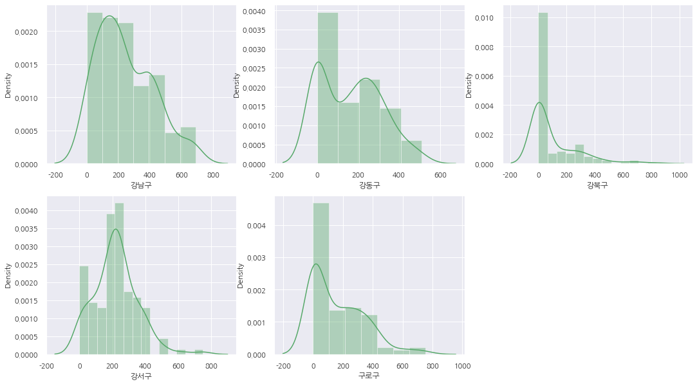

Seoul Bike - region
region
sub-analysis
서울 각 구의 따릉이 정보를 지역별로 볼 수 있습니다
REGIONAL BIKE STATUS
map
status
trend
mean distance
density
density
각 구 별 대여소의 밀집도를
시각 자료로 확인할 수 있습니다
강남구 - 구로구
금천구 - 도봉구
동대문구 - 서초구
성동구 - 영등포구
용산구 - 중랑구
